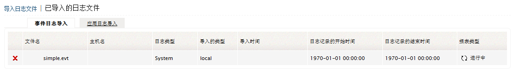
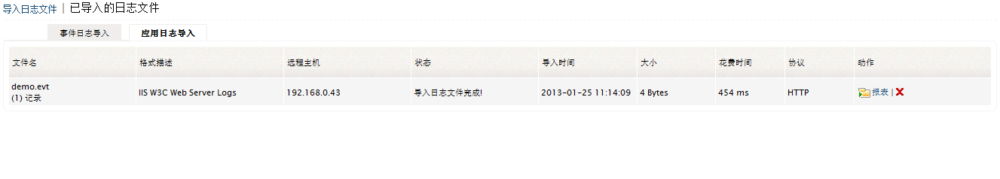

导入
您可以导入Windows事件日志、 Syslog和应用日志来进行分析和生成报表。
怎样导入日志文件？
请参阅导入日志文件部分来了解如何导入日志文件。
导入的日志文件
在导入的日志文件页面，将显示出所有已导入到EventLog Analyzer的日志文件，在此页面有两个标签，即事件日志导入和应用日志导入。
事件日志导入标签显示了所有导入的事件日志以及导入的文件的名称、文件所在的主机、日志的类型、导入的方法（HTTP/FTP）、导入的时间、日志记录开始的时间和结束时间、生成报表的类型等。

应用日志导入显示了所有导入的应用日志，以及导入的文件的名称、日志格式描述、日志所在的远程主机、当前的导入状态、导入的时间、导入的日志文件的大小、导入文件花费的时间、导入使用的协议（HTTP/FTP），您可以将日志文件加载到数据库执行搜索选项，如文件已加载到数据库则可执行搜索和删除数据库选项。

|